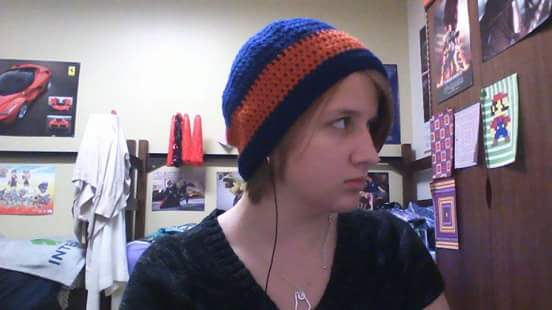

About Me

My name is Caroline
I first learned to crochet when I was 9. I learned from my grandmother.
I am in a knitting and crochet club. Yes, that is a thing. If you are interested in learning about the club,
please check out this link.
I do not know how to knit. Sorry for anyone who was hoping to learn both.
I am definitely not a master crocheter. However,I will do my best to teach you or point you in the right direction.
I have an online shop where I display my creations and try to sell some myself. If you're interested and would
like to check it out, contact me!